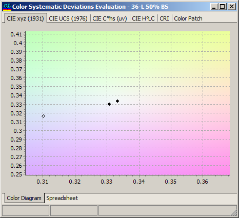
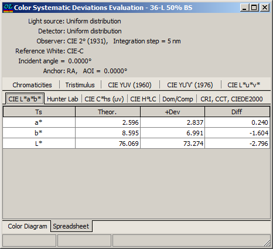
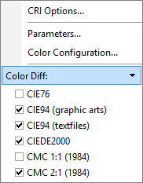
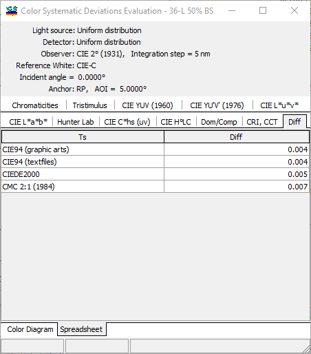

Color Systematic Deviation Evaluation
Color Systematic Deviation Evaluation
Navigation: OptiLayer Menu Commands > Analysis Menu > Systematic Deviations >
Color Systematic Deviation Evaluation
` <systematic_deviations_evaluati.html>`__ ` <idh_menu_analysis.html>`__ ` <efi_systematic_evaluation.html>`__
The influence of Systematic Deviations on color properties of the design is presented in this window.

The change of colors is represented in graphical form (the chart above is zoomed).

Also, changes in color characteristics are represented in numerical form on the spreadsheet tab of this window.
The differences can be represented using available color difference formulas, configurable through the right-click menu:

The Diff tab represents variations of colors due to systematic deviations.
